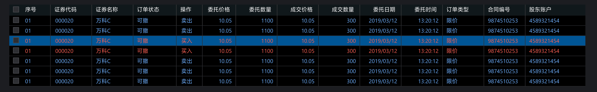
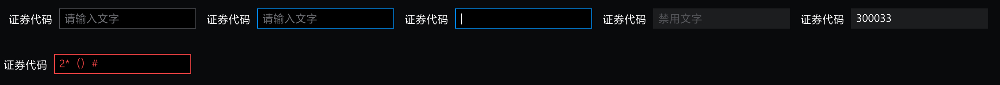
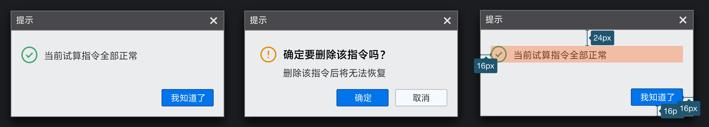

Layout布局
协助进行页面级整体布
组件概述
Layout：布局容器，底层模块其下可嵌套 Header Sider Content Footer 或 Layout 本身，可以放在任何父容器中。
Header：顶部导航栏，自带默认样式，且始终固定
Sider：侧边栏，自带默认样式及基本功能，宽度可折叠扩展
Content1：内容展示区，自带默认样式，通常情况下只承载数据列表相关内容
Content2： 功能操作区，自带默认样式，通常情况下承载相关操作表单、侧导航、标题栏等内容
Footer：底部布局，自带默认样式，其下可嵌套任何元素，只能放在 Layout 中
尺寸视觉快速查阅
| 名称 | 尺寸 | 视觉（黑） | 视觉（蓝） |
|---|---|---|---|
| Header | 高度 32px， 宽度：1440px | #161616 | |
| Sider | 宽度150px ， 拓展150px+8n | #2B2B2B | |
| Footer | 高度28px | #161616 | |
| Content1 | - | #000000 | |
| Content2 | - | #2B2B2B | |
| Space | 2px | #4C4C4F |
典型的页面布局
上中下布局

顶部-侧边布局-通栏

顶部栏Header
LOGO
| 尺寸 | 左边距 | 上下间距 |
|---|---|---|
| 高度20px 宽度 84px | 10px | 6px |
文字
| 版本 | 字号 | 默认颜色 | 悬停颜色 | 选中颜色 |
|---|---|---|---|---|
| 黑版 | 14px | #BDC0C7 | #F7FAFF | #FFFFFF 加粗Semibold |
| 蓝版 | 14px |
ICON
| 版本 | 容器大小 | 默认颜色 | 悬停颜色 | 点击颜色 |
|---|---|---|---|---|
| 黑版 | 16px*16px | #8E8E8E | #D2D2D3 | #616266 |
| 蓝版 | 16px*16px |
提供SVG格式图标，请程序调用也使用svg矢量图片，避免高清屏模糊问题
实例展示
选中状态火柴棍颜色 #0086E6

底部栏Footer
文字
| 版本 | 字号 | 默认颜色 |
|---|---|---|
| 黑版 | 12px | #BDC0C7 |
| 蓝版 | 12px |
ICON
| 版本 | 容器大小 | 默认颜色 | 悬停颜色 | 点击颜色 |
|---|---|---|---|---|
| 黑版 | 16px*16px | #8E8E8E | #D2D2D3 | #616266 |
| 蓝版 | 16px*16px |
侧边栏Sider
菜单项
| 版本 | 尺寸 | 上下间距 | 默认颜色 | 悬停颜色 | 选中颜色 |
|---|---|---|---|---|---|
| 黑 | 高度28px 宽度自适应菜单栏大小 | 0px | #2B2B2B | #20477B | #0086E6 |
| 蓝 | 高度28px 宽度自适应菜单栏大小 |
文字
| 版本 | 字号 | 默认颜色 | 悬停颜色 | 选中颜色 |
|---|---|---|---|---|
| 黑版 | 13px | #A6A9AE | #F7FAFF | #FFFFFF |
| 蓝版 | 13px |
实例

Table表格
最基础的数据列表展示，可承载文字、列表、常用于数据展示页面
何时使用
当有大量结构化的数据需要展现时；
当需要对数据进行排序、搜索、分页、自定义操作等复杂行为时
组件概述
Header：表头容器，用于放置表头字段文字
Columns：表格项容器，自带默认样式
Columns-space：表格项容器间隔，自带默认样式
Line：分割线，用于表格内数据项的分割，包括表头表项都使用同一种
尺寸视觉快速查阅
| 名称 | 尺寸 | 视觉（黑） | 视觉（蓝） |
|---|---|---|---|
| Header 表头容器 | 高度24px | #11181C | |
| Columns 表格项容器 | 高度22px | #000000 | |
| Columns-space 间隔 | 高度22px | #161517 | |
| Columns-hover 悬浮 | 高度22px | #46494F | |
| Columns-pressed 选中 | 高度22px | #20477B | |
| Line 分割线 | 1px | #3B3B3D |
文字
| 名称 | 字号 | 视觉（黑） | 视觉（蓝） | 对齐方式 |
|---|---|---|---|---|
| Title 表头字段 | 12px | #FFFFFF | ||
| Text-text 文字默认 | 12px | #D2D2D3 | ||
| Text-edit 可编辑 | 12px | #6EAFFF 如与卖出同时出现则加下划线区别 | ||
| Text-perssed 选中 | 12px | #FFFFFF | ||
| Text-Number 金额 | 12px | #D2D2D3 | ||
| Text-Date 日期 | 12px | #D2D2D3 | ||
| Text-up 涨 | 12px | #FF6155 | ||
| Text-down 跌 | 12px | #50C752 | ||
| Text-buy 买 | 12px | #FF6155 | ||
| Text-sell 卖 | 12px | #6EAFFF |
典型实例
简单的表格

可选择表格
- 第一列选择框，包含单选多选
- 默认点击 checkbox 触发选择行为，需要点击行触发可以参考checkbox说明

带排序表格 控件下载
- 带有排序控件的字段即可进行排序操作，悬浮时背景色#20262A 选中后背景色#293136

买卖方向提示性表格
- 为了区分买卖方向的视觉识别，故将买入与卖出行分别用红蓝进行区别，一般用于买卖操作的记录

包含可编辑单元格的表格
- 编辑输入文本框，详细交互效果可查阅输入框Input模块

嵌套型子表格
- 嵌套表格表头颜色：#282829
- 嵌套表格单元格颜色：#1C1D21

带浮窗筛选表格
浮窗：尺寸110px*60px 底色#2B2B2B 描边 1px #434448
check栏：尺寸24px*58px 底色#141415
文字：14px #FFFFFF

Radio单选框
何时使用
用于在多个备选项中选中单个状态。
和
Select的区别是，Radio所有选项默认可见，方便用户在比较中选择，因此选项不宜过多
基本
尺寸：13px，包含内描边
文本与Radio间距：8px

文字
| 名称 | 字号 | 视觉（黑） | 视觉（蓝） |
|---|---|---|---|
| Text-normal | 13px | #D2D2D3 | |
| Text-disable | 13px | #616266 |
控件下载
Checkbox多选框
何时使用
- 在一组可选项中进行多项选择时
- 单独使用可以表示两种状态之间的切换，和
switch类似。区别在于切换switch会直接触发状态改变，而checkbox一般用于状态标记，需要和提交操作配合。
基本
尺寸：13px，包含内描边
文本与Checkbox间距：8px
文字
| 名称 | 字号 | 视觉（黑） | 视觉（蓝） |
|---|---|---|---|
| Text-normal | 13px | #D2D2D3 | |
| Text-disable | 13px | #616266 |
控件下载
Input输入框
通过鼠标或键盘输入内容，是最基础的表单域的包装
何时使用
- 需要用户输入表单域内容时。
- 提供组合型输入框，带搜索的输入框，还可以进行大小选择。
基本
- 我们为
<Input />输入框定义了三种尺寸（大、默认、小），高度分别为24px、20px和18px - 定义两种输入框上下间距（大、小），尺寸分别
8px、4px - 标题文字与输入框距离
8px，内部文字与输入框左侧间距6px
| 文字（黑版） | 文字（蓝版） | 输入框（黑版） | 输入框（蓝版） | |
|---|---|---|---|---|
| 缺省态 | #6D6F73 | - | - | |
| 默认态 | #FFFFFF | 填充#000000 描边#4C4D52 1px 不带圆角 |
||
| 悬停态 | #6D6F73 | 填充#000000 描边#0086E6 1px 不带圆角 |
||
| 点击态 | #FFFFFF | 填充#000000 描边#0086E6 1px 不带圆角 |
||
| 禁用态 | #555659 | 填充#25262A 无描边 不带圆角 |

扩展形式
带前缀和后缀输入框 下载控件

搜索框 下载控件
- 按钮控件请参阅Buttom控件说明
输入框组合
- 组合间距分为两种：
2px、0px
带步进控件 下载控件

文本域
- 用于多行输入
- 有下角需要加上控件 下载控件

控件下载
Modal 弹窗
何时使用
- 需要用户处理事务，又不希望跳转页面以致打断工作流程时，可以使用
Modal在当前页面正中打开一个浮层，承载相应的操作。
组件概述
Header：弹窗标题栏，用于放置弹窗名称、关闭缩小等控件
Content1：弹窗默认底层，可看作一级
Content2：弹窗确认内容底色，可看作二级
Tips_iocn：主要用于信息提示弹窗的图标
Trade_icon：主要用于提示交易买入卖出申购等方向的提示图标
Button1：高亮按钮，层级较为突出
Button2：一般按钮，用于普通操作的按钮
Line：分割线，用于内容的分割
基础布局
- 内容区域与容器四周间距为
左16px、上24px、右16px、下16px - 标题文字间距
左8px，上7px - 关闭控件间距
右8px，上7px - 按钮之间间距
8px，与容器间距右16px、下16px - 常用宽度尺寸建议
320px、376px、526px、780px

尺寸视觉快速查阅
| 名称 | 尺寸 | 视觉（黑） | 视觉（蓝） |
|---|---|---|---|
| Header | 固定高度30px | 填充#7A7A7A | |
| Content1 | -- | 填充 #EBECED 描边 #7A7A7A 投影 #000000 aplha 0.8 x, y - 0px, 7px blur - 15px | |
| Content2 | -- | 填充 #FFFFFF 描边 #D9D5D5 | |
| Tips_iocn | 24px*24px | 点击下载icon | |
| Trade_icon | 88px*88px | 点击下载icon | |
| Button1 | 78px*26px | 填充#0086E6 圆角2px | |
| Button2 | 78px*26px | 填充#EEEEEE 圆角2px 描边#B7B7B7 | |
| Line | 1px | 填充#E6E6E6 |
文字
| 名称 | 字号 | 视觉（黑） | 视觉（蓝） |
|---|---|---|---|
| 标题栏文字 | 13px | #FFFFFF | |
| 一级提示标题 | 16px 加粗 | #000000 | |
| 二级提示文字 | 14px | #323232 | |
| 正文文字 | 13px | #323232 |
典型实例
普通确认弹窗
- 宽度尺寸：设定大小两种尺寸建议，分别为
320px、376px
简单信息提示框 尺寸320px*160px

简单买卖提示框 尺寸 320px*191px

复杂买卖提示框 尺寸376px*270px

进度条 尺寸 320px*160px

表单操作弹窗
- 宽度尺寸：常用的几种宽度设定
320px、376px、526px、780px、更大尺寸可根据实际UI设计进行调整，原则上最大控制在1300px，需要加上滚动条判断 - 最大高度限定：
700px，如果超出该尺寸，弹窗需出现滚动条，防止信息被遮盖无法看到 - 输入表单之间上下间距为
8px
简单操作弹窗 宽度320px

基础操作弹窗 宽度376px

基础操作弹窗 中 宽度526px

操作弹窗 大 宽度780px


Scrollbar 滚动条
何时使用
- 滚动条是示意当前可视区域在所有内容中的相对位置，用户可以拖动滚动条快速切换可视区域。
- 在内容区域超出现有容器大小时使用